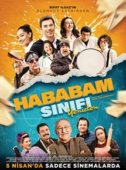
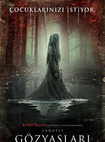
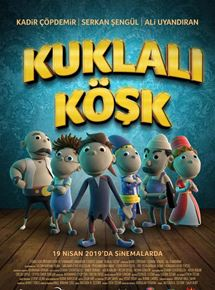

Vizyon tarihi: 26 Nisan 2019 (3s 1dk)
Yönetmen: Joe Russo, Anthony Russo
Oyuncular: Robert Downey Jr., Chris Evans, Mark Ruffalo
Tür: Aksiyon, Fantastik, Macera
Ülke: ABD
Özet ve Detaylar
"Avengers Infinity War"un ardından pek çok süper kahraman küle dönüşmüştür. Doktor Strange, Gamora, Drax,
Mantis, genç Örümcek Adam, Black Panther, Bucky Barnes, Groot, Scarlet Witch, Vision, Star Lord, Maria Hill,
The Wasp ve Nick Fury gibi pek çok kahraman, Thanos'un Sonsuzluk Eldiveni'ni ele geçirmesi ve kendi dengesini
kurması yüzünden yok olmuştur ve dünya umutsuz haldedir. Dünya üzerinde kalan Black Widow, Kaptan Amerika,
Thor ve Hulk kendi yaslarını tutmaktayken, Iron ve Nebula ise kontrol edemedikleri bir uzay gemisinin içinde,
uzay boşluğunda sürüklenmektedirler. Süper kahramanlar takımı için işler pek de iyi görünmemektedir. Ancak
Kuantum Bölgesi'nden çıkmanın bir yolunu bularak Avengers ekibinin kalan üyelerine giden Ant-Man, yeni bir
umut ışığı olacaktır. Daha önce var olduğunu bilmedikleri bölgeler, kahramanlar ve evrenlerin varlığını
öğrenen ekip, Thanos'un kurduğu bu çarpık dengeyi değiştirmek ve kendilerinden alınanı geri getirmek için
hayatlarının en büyük mücadelesine girişeceklerdir. Hepsi kişisel olarak önem verdikleri şeyleri kaybetmiş
olan kahramanlarımız için intikam vakti gelmiştir.
Hababam Sınıfı Yeniden

Vizyon tarihi: 5 Nisan 2019 (1s 51dk)
Yönetmen: Doğa Can Anafarta
Oyuncular: Altan Erkekli, Toygan Avanoğlu, Hande Katipoğlu
Tür: Komedi
Ülke: Türkiye
Özet ve Detaylar
Rıfat Ilgaz’ın unutmaz eseri Hababam Sınıfı yeniden beyaz perdeye uyarlanıyor. İnek Şaban, Güdük Necmi, Damat
Ferit, Hafize Ana, Mahmut Hoca gibi sevdiğimiz karakterlerle gönüllere taht kuran klasikleşmiş filmin
uyarlamasında yeni karakterler, yeni bir jenerasyon, yeni bir dil hakim. Özel Çamlıca Lisesi, yeniden karma
eğitime geçince, kızlar ve erkekler arasından tatlı bir rekabet başlar. Okula yatılı gelen kız öğrenciler ile
okulun gediklileri başlarda birbirlerine meydan okurken, bir süre sonra müttefik olarak birlikte birçok
maceraya atılır.1975 yılında Ertem Eğilmez’in yönetmen koltuğunda oturduğu filmin yönetmenliğini bu sefer Doğa
Can Anafarta üstleniyor. Yapımcılığını Hann Media’nın üstlendiği filmin senaryosunu ise Evren Erdoğan ve Ayşe
Balıbey birlikte kaleme alıyor.
Lanetli Gözyaşları

Vizyon tarihi: 19 Nisan 2019 (1s 34dk)
Yönetmen: Michael Chaves
Oyuncular: Linda Cardellini, Roman Christou, Jaynee-Lynne Kinchen
Tür: Korku
Ülke: ABD
Özet ve Detaylar
Lanetli Gözyaşları, kendisine ve ailesine musallat olan doğaüstü varlıktan kurtulmaya çalışan Anna’nın
hikayesini anlatıyor. Anna Garcia, 1973 Los Angeles'ta yaşayan bir sosyal hizmetler görevlisidir. Elindeki
davalardan biri onu oldukça zorlamaktadır. Davanın derinlerine indikçe, karmaşık davanın içinde ürkütücü
doğaüstü güçler olduğunu fark etmeye başlar. Bu doğaüstü güçlerin yarattığı etkiler, Anna'nın kendi ailesinin
başına gelenlere benzer izler taşımaktadır. Bu doğaüstü izler, kendi eliyle mühürlenmiş korkunç bir kaderde
sıkışıp kalan, korkunç görünüşü ve ölümle yaşam arasında sıkışan ruhu ile dehşet salan La Llorona'nın
izleridir. La Llorona, yani "Ağlayan Kadın", gerçek hayatta bir kıskançlık krizi sonucu kendi çocuklarını
boğmuştur. Acı içinde ağlarken kendini de azgın nehre atan kadının ismi, nesiller boyunca dehşetin kendisi
olmuştur. Artık gözyaşları sonsuzdur ve geceleri onun ölüm çağrısını duyanların kurtuluşu yoktur. Kendi
çocuklarının yerine geçirmek için çaresizce çocukları avlayan La Llorona, yüzyıllar geçtikçe arzusunda daha da
vahşileşmiş ve yöntemleri daha da acımasız olmuştur. Çocuklarını tehlikeye soktuğundan şüphelenilen sorunlu
bir annenin ürkütücü uyarısını göz ardı eden Anna ve küçük çocukları, korkutucu bir doğaüstü dünyaya çekilir.
La Llorona’nın ölümcül gazabından kurtulmak için umutları, inançları sarsılmış bir rahip ve onun korkunun ve
inancın çarpıştığı uçurumlarda sallanan mistisizmi olabilir. Anna'nın ailesini kurtarmak için inançlarına sıkı
sıkı sarılması ve ruhsal bir mücadele vermesi gerekecektir...
Kuklalı Köşk: Hırsız Var

Vizyon tarihi: 19 Nisan 2019 (1s 24dk)
Yönetmen: Mustafa H. Öztürk
Oyuncular: Linda Cardellini, Roman Christou, Jaynee-Lynne Kinchen
Tür: Komedi
Ülke: Türkiye
Özet ve Detaylar
Çocuk filmi
Kuklalı Köşk: Hırsız Var, zengin olma hayali kuran bir grup hırsızın, canlı kuklaları çalmaları sonucu
başlarına gelen maceraları konu ediyor. Büyük bir köşkte yaşayan Müşfik Amca’nın bir akşam arkadaşlarının
davetine katılması, beklenmedik olayların gelişmesine neden olur. Müşfik’in evine girmeyi planlayan Behçet ve
Riko adındaki hırsızlar, onun evden ayrılmasıyla birlikte planlarını uygulamaya koyulur. Hırsızlar evde
kimsenin olmadığını düşünmektedir ancak bilmedikleri çok önemli bir şey vardır. Müşfik, evden giderken köşkü
kuklalara emanet etmiştir. Eve hırsızların girdiğini gören kuklalar, evi hırsızlara karşı savunmaya başlar.
Karşılarında birden canlı kuklaları görünce ne yapacaklarını şaşıran Behçet ve Riko, kuklaların daha çok para
edeceğini düşünüp, onları kaçırmaya karar verir. Ancak bunu yapmak, sandıkları kadar kolay olmayacaktır.